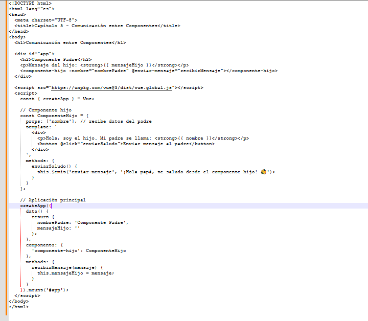

Capitulo V: Comunicación entre componentes en Vue.js
Aprender cómo los componentes padre e hijo se comunican mediante props (para enviar datos) y eventos (para recibirlos).
¿Qué es la comunicación entre componentes?
En Vue, puedes dividir tu aplicación en componentes pequeños que colaboran entre sí.
- El componente padre puede enviar datos al hijo usando props.
- El componente hijo puede enviar información al padre usando eventos personalizados con $emit.
Esto permite mantener tu código organizado y reutilizable.
Para ilustrar prueba el siguiente ejemplo práctico crea un archivo llamado comunicacion-componentes.html y prueba con el sieguiente contenido:
Siguiente